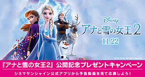
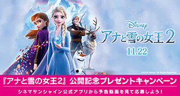
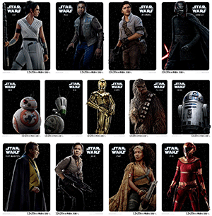
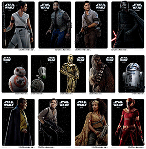

|
シネマサンシャインメールマガジン 2019/12/13号【グランドシネマサンシャイン版】 |
 |
毎月15日はシネマサンシャインデー
どなたさまでも1,200円でご鑑賞いただけます。 次回は明後日12/15（日）です！ ※3D、4DX、IMAX、ATMOS、dts-x、ScreenX、BESTIAは別途追加料金が必要となります。 |
オススメ作品
『ジュマンジ／ネクスト・レベル』
12/13（金）公開
©2019 CTMG. All Rights Reserved.
全世界大ヒットのアクション・アドベンチャー第２弾。 今度は仲間を救うため再びゲームの中へ――！あの冒険から2年。 破壊したはずの呪われたゲーム「ジュマンジ」にまたもやスペンサーが吸い込まれてしまう。 友人たちは彼を救出するため再びログインするが、バグのせいでおじいちゃん達までゲームの中に!?無理ゲーと化した世界から生きて帰れるのか？
監督：ジェイク・カスダン
出演：ドウェイン・ジョンソン ジャック・ブラック ケヴィン・ハート カレン・ギラン ニック・ジョナス ダニー・デヴィート ダニー・グローヴァー
出演：ドウェイン・ジョンソン ジャック・ブラック ケヴィン・ハート カレン・ギラン ニック・ジョナス ダニー・デヴィート ダニー・グローヴァー
公式サイト：https://www.jumanji.jp/
『スター・ウォーズ／スカイウォーカーの夜明け』
12/20（金）公開
© 2019 Lucasfilm Ltd. All Rights Reserved.
スカイウォーカー家の物語ついに完結！
はるか彼方の銀河系で繰り広げられる、スカイウォーカー家を中心とした壮大な＜サーガ＞の結末は、“光と闇”のフォースをめぐる最後の決戦に託された──祖父ダース・ベイダーの遺志を受け継いだカイロ・レン。 伝説のジェダイ、ルーク・スカイウォーカーの想いを引き継ぎ、フォースの力を覚醒させたレイ。 そして、R2-D2、C-3PO、BB-8ら忠実なドロイドと共に銀河の自由を求めて戦い続ける、生きる英雄レイア将軍、天才パイロットのポー、元ストームトルーパーのフィンら、レジスタンスの同志たち…。 さらに、ハン・ソロの永遠の好敵手ランド・カルリジアンもエピソード・シリーズでは『スター・ウォーズ エピソード6／ジェダイの帰還』以来の再登場。 果たして、彼らを待ち受ける運命とは？そして、いかなるエンディングを迎えるのか？全世界がその行く末を固唾をのんで見守っている。 驚きと感動に満ちた壮大なるフィナーレに向けて、カウントダウンは始まった。
はるか彼方の銀河系で繰り広げられる、スカイウォーカー家を中心とした壮大な＜サーガ＞の結末は、“光と闇”のフォースをめぐる最後の決戦に託された──祖父ダース・ベイダーの遺志を受け継いだカイロ・レン。 伝説のジェダイ、ルーク・スカイウォーカーの想いを引き継ぎ、フォースの力を覚醒させたレイ。 そして、R2-D2、C-3PO、BB-8ら忠実なドロイドと共に銀河の自由を求めて戦い続ける、生きる英雄レイア将軍、天才パイロットのポー、元ストームトルーパーのフィンら、レジスタンスの同志たち…。 さらに、ハン・ソロの永遠の好敵手ランド・カルリジアンもエピソード・シリーズでは『スター・ウォーズ エピソード6／ジェダイの帰還』以来の再登場。 果たして、彼らを待ち受ける運命とは？そして、いかなるエンディングを迎えるのか？全世界がその行く末を固唾をのんで見守っている。 驚きと感動に満ちた壮大なるフィナーレに向けて、カウントダウンは始まった。
監督：J.J.エイブラムス
出演：デイジー・リドリー アダム・ドライバー ジョン・ボイエガ オスカー・アイザック マーク・ハミル キャリー・フィッシャー ビリー・ディー・ウィリアムズ ルピタ・ニョンゴ ドーナル・グリーソン ケリー・マリー・トラン ヨーナス・スオタオ アンソニー・ダニエルズ ビリー・ラード
出演：デイジー・リドリー アダム・ドライバー ジョン・ボイエガ オスカー・アイザック マーク・ハミル キャリー・フィッシャー ビリー・ディー・ウィリアムズ ルピタ・ニョンゴ ドーナル・グリーソン ケリー・マリー・トラン ヨーナス・スオタオ アンソニー・ダニエルズ ビリー・ラード
上映作品
ニュース
○カニエ・ウェストのIMAX映画『ジーザス・イズ・キング』大ヒットを受けて追加上映が緊急決定！!
12/6（金）より３日間限定公開のカニエ・ウェストのIMAX映画『ジーザス・イズ・キング』ですが、異例の大ヒットを受けてグランドシネマサンシャインにて追加上映が緊急決定しました！
グランドシネマサンシャインIMAXシアターにて12/13（金）、12/14（土）、12/15（日）の３日間、連日一回上映いたします。
グランドシネマサンシャインIMAXシアターにて12/13（金）、12/14（土）、12/15（日）の３日間、連日一回上映いたします。
© 2019 IMAX Corporation and West Brands, LLC. All Rights Reserved. Roden Crater © James Turrell
○『アナと雪の女王２』公開記念プレゼントキャンペーン開催！！シネマサンシャイン公式アプリから予告動画を見て応募しよう！
『アナと雪の女王２』公開記念のプレゼントキャンペーンを開催中です。 シネマサンシャイン公式スマートフォンアプリ(無料)から予告動画を見てご応募いただいた方の中から抽選で『アナと雪の女王２』豪華グッズをプレゼント！
応募締切：2020年1月10日（金）

応募締切：2020年1月10日（金）

○シネマサンシャインの新しい会員サービス『シネマサンシャイン リワード』スタート！
もっともっとオトクに映画を観よう！６ポイントで１回鑑賞無料！毎週木曜は1,100円鑑賞などお得なサービスがいっぱいです！シネマサンシャインアプリから新しい会員サービスへ登録いただけます。 是非ご登録ください。
全劇場で対応開始！
※年会費500円あり
全劇場で対応開始！
※年会費500円あり

○長きに渡り語り継がれてきた伝説の＜完結編＞『スター・ウォーズ／スカイウォーカーの夜明け』12/20公開
"映画を超えた史上空前のエンターテイメント「スター・ウォーズ」がついに完結─。 1977年に『スター・ウォーズ エピソード４／新たなる希望』が全米で公開されてから今年で42年。 永きに渡り紡がれてきた伝説と呼べる唯一の映画の完結編であり、スカイウォーカー家の物語を描く、最後の「スター・ウォーズ」、『スター・ウォーズ／スカイウォーカーの夜明け』が12月20日（金）に日米同時公開となる。
予告編では、レイ、カイロ・レンを始めとした新世代に加え、レイアとランド・ランドカルリジアンといったレジェンド達、そして、C-3PO、R2-D2、BB-8、そしてD-O等愛すべきドロイドたちが登場。 彼らが放つ意味深な言葉の数々に、想像が掻き立てられる。
C-３POの「最後にもう一度だけ 友人たちに」という、仲間たちへ別れを告げるかのような意味深なセリフと、映像のラストで目を涙で潤ませながらライトセーバーを構えるレイに対し優しく語りかけるルークとレイアの「May the Force be with you. Always」という名セリフは全世界のファンの胸に突き刺さる。 ファンにとっても長年の友となったキャラクター達に別れを告げる時が近づいているのか―。 果たしてジェダイの運命の結末とは？長きに渡り語り継がれてきた伝説の＜完結編＞、終わりが始まる。
J.J.エイブラムス監督は「最終章が新三部作だけでなく、9つのエピソードすべての完結編になることを意識した。 「『フォースの覚醒』の時からずっと壮大なサーガの続きだと意識してきた。 それは本と同じで、最後のいくつかの章が、その前と全然つながっていないという本はないよね。 だから僕はまったく新しいことを持ち込もうという意図はそもそもまるでなかった。 ジョージ・ルーカスが描いてきた『スター・ウォーズ』シリーズに忠実でありながら、自分たちならではの大胆なことにも挑戦しているんだ」と本作についてコメントをしている。 長いサーガの最後に一体、どんな物語が描かれるだろうか？
スカイウォーカー家の物語を描く──「スター・ウォーズ」完結編『スター・ウォーズ／スカイウォーカーの夜明け』は12月20日より公開！"

予告編では、レイ、カイロ・レンを始めとした新世代に加え、レイアとランド・ランドカルリジアンといったレジェンド達、そして、C-3PO、R2-D2、BB-8、そしてD-O等愛すべきドロイドたちが登場。 彼らが放つ意味深な言葉の数々に、想像が掻き立てられる。
C-３POの「最後にもう一度だけ 友人たちに」という、仲間たちへ別れを告げるかのような意味深なセリフと、映像のラストで目を涙で潤ませながらライトセーバーを構えるレイに対し優しく語りかけるルークとレイアの「May the Force be with you. Always」という名セリフは全世界のファンの胸に突き刺さる。 ファンにとっても長年の友となったキャラクター達に別れを告げる時が近づいているのか―。 果たしてジェダイの運命の結末とは？長きに渡り語り継がれてきた伝説の＜完結編＞、終わりが始まる。
J.J.エイブラムス監督は「最終章が新三部作だけでなく、9つのエピソードすべての完結編になることを意識した。 「『フォースの覚醒』の時からずっと壮大なサーガの続きだと意識してきた。 それは本と同じで、最後のいくつかの章が、その前と全然つながっていないという本はないよね。 だから僕はまったく新しいことを持ち込もうという意図はそもそもまるでなかった。 ジョージ・ルーカスが描いてきた『スター・ウォーズ』シリーズに忠実でありながら、自分たちならではの大胆なことにも挑戦しているんだ」と本作についてコメントをしている。 長いサーガの最後に一体、どんな物語が描かれるだろうか？
スカイウォーカー家の物語を描く──「スター・ウォーズ」完結編『スター・ウォーズ／スカイウォーカーの夜明け』は12月20日より公開！"

○シネマサンシャイン「おやこシネマ」開催！
子育て中のママ、パパがお子さま連れで一緒に映画を鑑賞できる上映会を開催いたします。
小さいお子さま連れでの映画鑑賞は…
「びっくりして泣いてしまったら…」
「暗いので子供が怖がるかも…」
「子供がおしゃべりしたり歩き回るかも…」
そんな不安や心配がつきないママ、パパの為の上映会です。
音量が通常よりも小さめで、照明も明るめに設定されており、
小さなお子様でも怖がることなくご鑑賞いただけます。
今後の実施は下記となります。
12月17日(火)『ルパン三世 THE FIRST』
1月14日(火)『スター・ウォーズ／スカイウォーカーの夜明け』

小さいお子さま連れでの映画鑑賞は…
「びっくりして泣いてしまったら…」
「暗いので子供が怖がるかも…」
「子供がおしゃべりしたり歩き回るかも…」
そんな不安や心配がつきないママ、パパの為の上映会です。
音量が通常よりも小さめで、照明も明るめに設定されており、
小さなお子様でも怖がることなくご鑑賞いただけます。
今後の実施は下記となります。
12月17日(火)『ルパン三世 THE FIRST』
1月14日(火)『スター・ウォーズ／スカイウォーカーの夜明け』
○メルマガ会員限定割引クーポンプレゼント！
メルマガ会員様限定でお得な割引クーポンをプレゼント！
以下の画面をチケット購入時にご提示ください。
PCでご覧のお客様は該当部分を印刷してご提示ください。

以下の画面をチケット購入時にご提示ください。
PCでご覧のお客様は該当部分を印刷してご提示ください。
※有効期限は1月10日までになります。
※割引券1枚で2名様まで有効。 他の割引サービスとの併用はできません。
※特別興行などご利用いただけない場合がございます。
※インターネット購入（e-box、ムビチケ)ではご利用いただけません。
※期間中何回でもご利用頂けます。
池袋、ユーカリが丘、大和郡山、北島、下関、姶良の自動券売機では下記QRをご利用ください。
【一般・大学生】

【高校生以下】

【一般・大学生】
【高校生以下】
ムービークイズ
○前回のクイズ
11/22公開『アナと雪の女王2』で前作に引き続きエルサ 役のイディナ・メンゼルはブロードウェイの舞台をメインに活躍する女優さんですが、過去にディズニーの実写映画に出演しています。 その作品はなんでしょう？
11/22公開『アナと雪の女王2』で前作に引き続きエルサ 役のイディナ・メンゼルはブロードウェイの舞台をメインに活躍する女優さんですが、過去にディズニーの実写映画に出演しています。 その作品はなんでしょう？
答え：魔法にかけられて』
ディズニーアニメのプリンセスが実写の世界へ迷い込むファンタジック・コメディのミュージカル映画。
ディズニーアニメのプリンセスが実写の世界へ迷い込むファンタジック・コメディのミュージカル映画。
○今回のクイズ
12/20公開『スター・ウォーズ／スカイウォーカーの夜明け』の「スター・ウォーズ」シリーズで、レイア姫を演じるキャリー・フィッシャーとヨーダの声を担当するフランク・オズは、80年代のミュージカル・コメディ映画で共演しています。 その作品はなんでしょう？
12/20公開『スター・ウォーズ／スカイウォーカーの夜明け』の「スター・ウォーズ」シリーズで、レイア姫を演じるキャリー・フィッシャーとヨーダの声を担当するフランク・オズは、80年代のミュージカル・コメディ映画で共演しています。 その作品はなんでしょう？
答えは、次回のシネマサンシャインメールマガジンで！